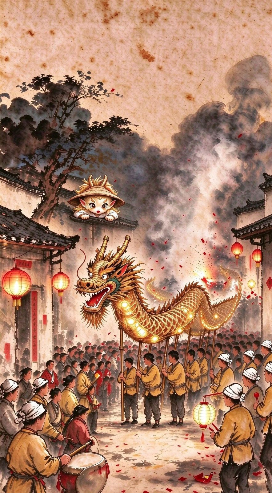
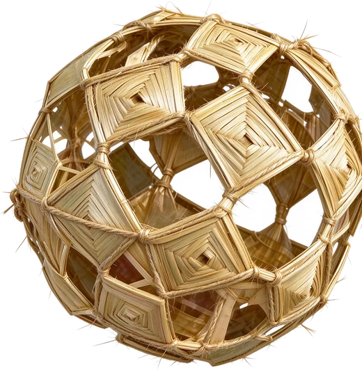

丰年之夜

这一夜，举龙的是全村的人。
我们都在等那场雨。

剔空的草节编成，球里又有球
撞 花 灯
龙头里悬空吊一盏撞花灯。灯用剔空的草节编成，球里又有球；龙头一摆，它就滴溜溜地转。
这 一 页
前面几页，都是几双手在编这张网。
这一页，是整个村子在举。
这一页，是整个村子在举。
一个人成不了事 —— 手艺要有人看、有人接、有人抬。
据《遍观湖口·湖口草龙》
一条长 28 米、11 节的草龙，约需 300 个工时
一条长 28 米、11 节的草龙，约需 300 个工时
一 / 二下一页
锣鼓开道，草龙穿村。舞者衣饰鲜明，一路杂技逗趣。它是一条龙，也是一场全村的狂欢。
龙头里悬空吊一盏撞花灯 —— 剔空的草节编成，球里又有球，龙头一摆就转。
上滑